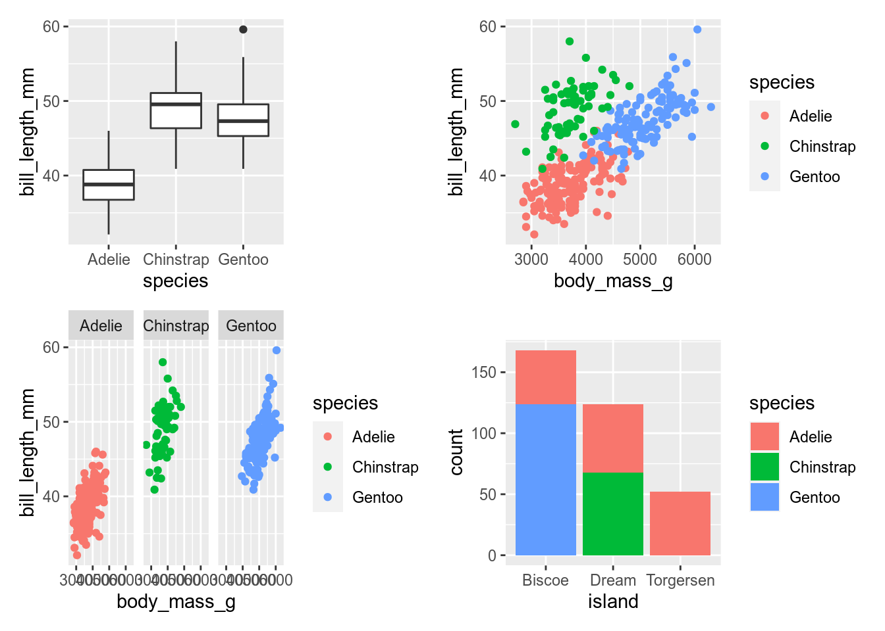

15 Combining plots
We often need to combine plots to make a multipart figure in a manuscript or thesis.
First, check you actually need to combine plots and cannot use facets instead. Typically, use facets if the x-axis variable is the same for all plots and the plots use the same geoms.
Plots can be combined using the patchwork package.
Start by making some plots
p1 <- ggplot(penguins, aes(x = species, y = bill_length_mm)) +
geom_boxplot()
p2 <- ggplot(penguins, aes(x = body_mass_g, y = bill_length_mm, colour = species)) +
geom_point()
p3 <- ggplot(penguins, aes(x = body_mass_g, y = bill_length_mm, colour = species)) +
geom_point() +
facet_wrap(~ species)
p4 <- ggplot(penguins, aes(x = island, fill = species)) +
geom_bar()The simplest way to use patchwork is to + to combine the plots.
patchwork will try to make the combined figure square.
p1 + p2 + p3 + p4
With | (side by side) \ (over under), you can have more control.
(p1 | p2 | p4) / p3plot_layout gives you control over the relative size of the plot and whether the legends should be combined if possible.
(p1 | p2 | p4) / p3 +
plot_layout(heights = c(2, 1), guides = "collect")If you want to change all the plots in the combined figure, you can add a ggplot2 function with &.
(p1 | p2 | p4) / p3 +
plot_layout(heights = c(2, 1), guides = "collect") &
theme(panel.grid = element_blank())You can also overlay figures, which might be useful to show an inset map.
library(rnaturalearth)
library(sf)
# map data inset
europe <- ne_countries(scale = 110, continent = "Europe", returnclass = "sf")
# map data main map
svalbard <- ne_countries(scale = 50, country = "Norway", returnclass = "sf") |>
st_crop(c(xmin = 0, xmax = 34, ymin = 76, ymax = 81))
# bounding box main map
bb <- svalbard |>
st_bbox()
#inset map
euro_map <- ggplot() +
geom_sf(data = europe) +
# annotate bounding box
annotate(geom = "rect",
xmin = bb$xmin, xmax = bb$xmax, ymin = bb$ymin, ymax = bb$ymax,
fill = "red", alpha = 0.3) +
coord_sf(xlim = c(-25, 40), y = c(50, 82)) +
ggthemes::theme_map() +
theme(
#give white background and black border
panel.background = element_rect(fill = "white", colour = "black"),
plot.margin = margin() #remove margins
)
# main map
svalbard_map <- ggplot() +
geom_sf(data = svalbard)
# combined map
svalbard_map +
inset_element(euro_map,
left = 0.7,
right = 0.99,
top = 0.4,
bottom = 0.01)